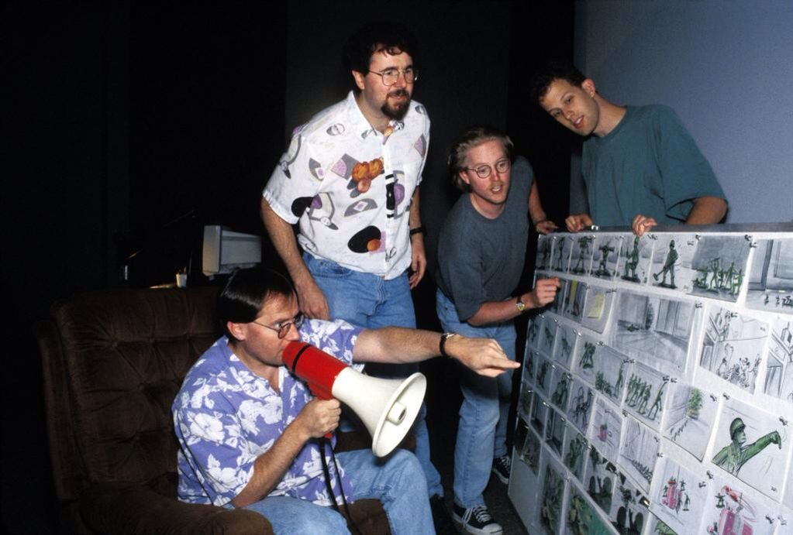
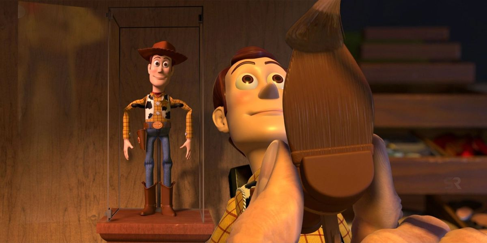
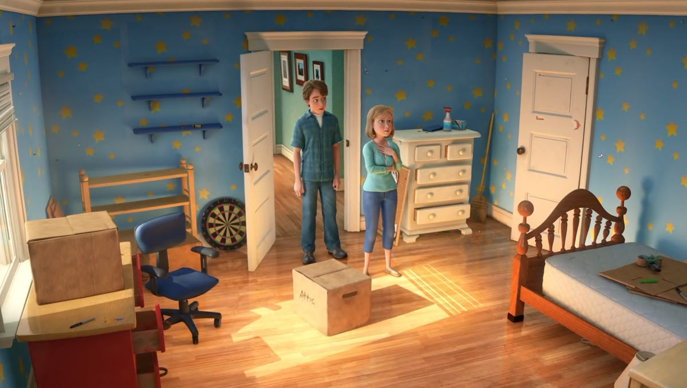
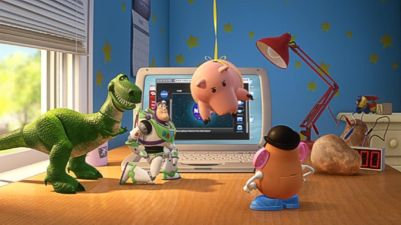

🎬 Datos de producción
- Toy Story tardó 4 años en producirse
- Fue la primera película completamente animada por computadora
- Se necesitaron 800,000 horas de máquina para renderizar la película
- El equipo de animación original tenía solo 27 animadores
- Cada frame individual tomó entre 4 y 13 horas en renderizarse

🏆 Récords de la saga
- Toy Story 3 fue la primera película animada en recaudar más de mil millones de dólares
- Toy Story 3 ganó el Oscar a Mejor Película Animada
- La saga ha recaudado más de $3 mil millones mundialmente
- Toy Story fue la primera película animada nominada a Mejor Guión Original
- Todas las películas tienen más de 95% en Rotten Tomatoes

💬 Frases famosas
- "¡Hay una serpiente en mi bota!" - Woody
- "¡Hasta el infinito... y más allá!" - Buzz Lightyear
- "Eres un juguete triste y extraño" - Woody
- "Esto no es volar, es caer con estilo" - Buzz
- "Los juguetes son para ser amados" - Andy

💡 Información interesante
- Tim Allen improvisó muchas de las líneas de Buzz Lightyear
- El diseño de Woody cambió drásticamente durante la producción
- Andy está basado en el director John Lasseter
- La habitación de Andy tiene referencias a otras películas de Pixar
- El código A113 aparece en todas las películas de Toy Story